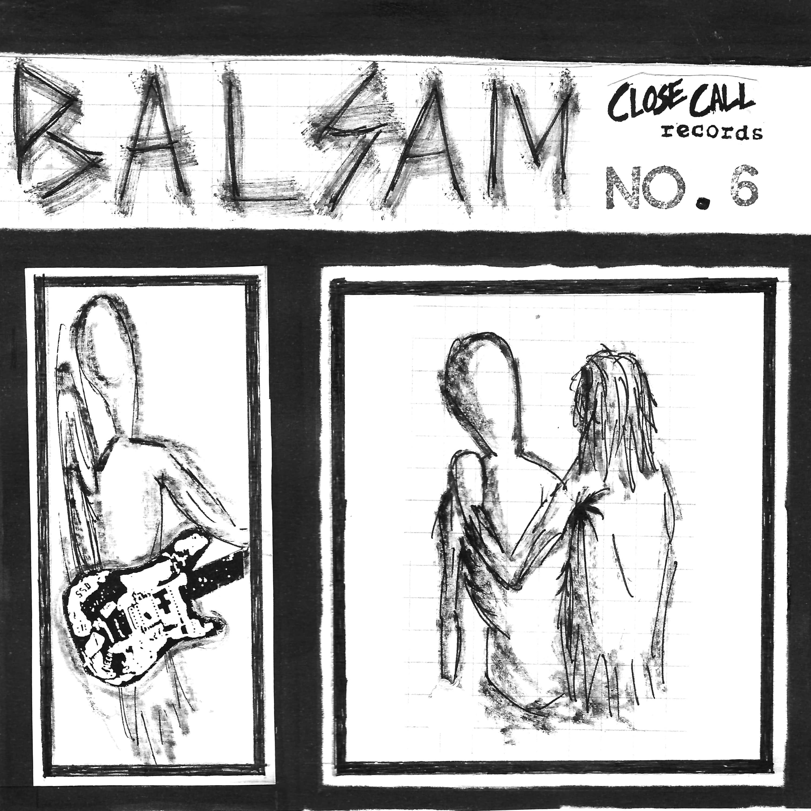
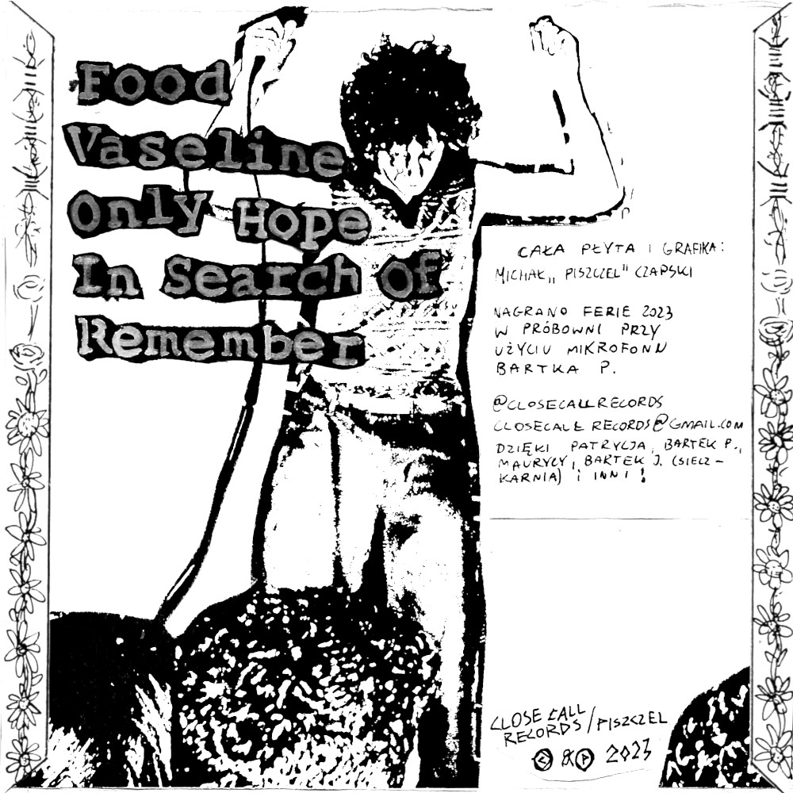

CD / 5 Utworów + plakat
Projekt solo Piszczela, inspirowany Rites of Spring/Embrace itd. Nagrywany podczas przytłaczającej zimy.
Nagrano w piwnicy (proto-Close Call Studio) pożyczonym mikrofonem - ferie 2023
1. Food
2. Vaseline
3. Only Hope
4. In Search Of
5. Remember
Michał "Piszczel" Czapski - wokal, gitara, perkusja, bas
Michał Czapski - wydanie/grafika
Wydano - Styczeń 2023
EPka niedostępna na CD.
Posłuchaj na Bandcamp.
Balsam / Close Call Records © 2023